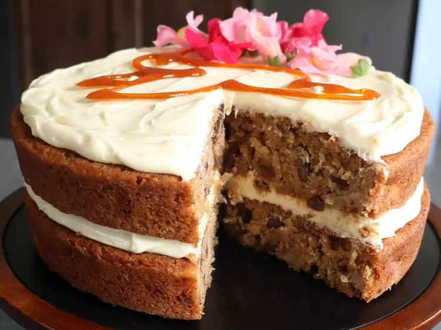

Chef John's Hummingbird Cake

Description
Depending on where you're from, this hummingbird cake is either your favorite cake, or you've either never heard of
it! But it only takes making it one time to love it. This proven crowd-pleaser is pretty sweet but thanks to
bananas, pineapples, and pecans, it's a much more interesting, tropical sweetness, and paired with an extra-light
version of cream cheese frosting, it's really a perfect combination.
Ingredients
For the Cake:
- 2 cups white sugar
- 3 cups all-purpose flour
- 1 teaspoon ground cinnamon
- 1 teaspoon baking soda
- 1 ¼ teaspoons kosher salt
- 1 ½ cups vegetable oil
- 3 large eggs, beaten
- 1 ½ teaspoons vanilla extract
- 1 cup crushed pineapple
- 3 medium ripe bananas, sliced
- 1 cup chopped pecans, toasted
For the Frosting:
- 2 (8 ounce) packages cream cheese, softened
- ½ cup unsalted butter, at room temperature
- 1 teaspoon vanilla extract
- 1 (16 ounce) package powdered sugar
For the Hummingbird:
- ½ cup white sugar, or as needed
- ¼ cup edible flowers, assorted
Steps
- Preheat the oven to 350 degrees F (175 degrees C). Butter two 9-inch round cake pans, then dust with flour. Set aside.
- Combine sugar, flour, cinnamon, baking soda, and salt in a large mixing bowl; whisk quickly to combine. Add oil and eggs and mix with a spatula until just combined.
- Add vanilla, pineapple, bananas, and toasted pecans, and mix until thoroughly combined. Divide batter evenly between the prepared pans. Shake each pan then tap on the counter to settle the batter and bring any air bubbles to the top.
- Bake in the preheated oven until a wooden skewer inserted in center comes out clean, about 35 minutes.
- Let cakes cool in pan for 10 minutes before removing to a wire rack. Let cool completely, at least 1 hour.
- Combine cream cheese, butter, and vanilla in the bowl of a stand mixer. Using the whisk attachment on high speed, mix until smooth and creamy, scraping down the sides as necessary with a spatula. Mix in the powdered sugar on a lower speed in 3 or 4 additions until mostly incorporated. Increase to high speed and whip until light and fluffy.
- Place one cake on a serving platter. Spread 1/2 of the frosting on top, leaving 1/4 to 1/2 inch unfrosted at the edges. Top with second cake layer and give it a firm but gentle press. Pile remaining frosting on top and spread toward the outside.
- Place in the refrigerator to chill for 1 hour.
- Meanwhile, draw or trace a hummingbird template on a piece of paper and lay on a baking sheet under a silicone mat.
- Heat sugar for hummingbird in a saucepan over medium-low heat until dissolved, hot, and amber in color. Drip liquid sugar onto the silicon mat, tracing the hummingbird pattern. Let sit until hard.
- Place cooled hummingbird on top of cake and decorate with edible flowers.